Nyzo version 475 (commit on GitHub) is the first of two updates to allow the mesh to be reopened for new verifiers.
Shortly after the launch of the Nyzo blockchain, interest in the project resulted in rapid growth of the list of verifiers waiting to join. The design of the Nyzo verifier software at this time caused the computational demands of in-cycle verifiers to grow proportionally to the size of the waiting-verifiers list, and the magnitude of that growth was such that it was causing an unacceptable burden on in-cycle verifiers.
While the decentralized nature of Nyzo prevented us from truly closing the mesh to new verifiers, we were able to hide new verifiers from the nyzo.co website, and we were able to instruct the official Nyzo verifiers to ignore messages from verifiers that joined after a cutoff date. We were neither happy about nor proud of this solution, and some users figured out how to work around it, adding one or more lines to the trusted_entry_points file to contact verifiers that the Nyzo team did not control.
"Closing" the mesh did, however, reduce the rate at which new verifiers were started. This reduced rate gave us time to implement design improvements that effectively decoupled computational load of in-cycle verifiers from the size of the pool of verifiers waiting to join the cycle. This version, along with version 476, implement those improvements.
In BlockFileConsolidator, consolidation is no longer performed as soon as the last block in a 1000-block range is frozen. Instead, consolidation is performed when that block falls behind the retention edge. This was done to improve the efficiency of the initialization process when the verifier is restarted. Loading of blocks from individual files is more efficient than loading of blocks from consolidated files.
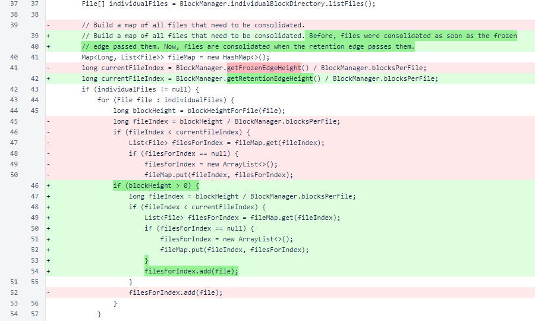Deletion of the individual file for the Genesis block was eliminated. This block will always be required by the BlockManager.
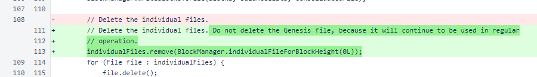In BlockManager, the verifierInCurrentCycle set has been replaced with currentCycleList and currentCycleSet. The list is used when an ordered collection is needed, and the set is used when ordering is unimportant.
The currentCycleEndHeight field stores the block height of the last element in currentCycleList. The cycleComplete field tracks whether the BlockManager has been tracking the blockchain long enough to have full knowledge of the current cycle.

A main() method was added for testing the initialization process.
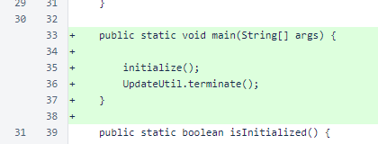In the getTrailingEdgeHeight() accessor, recalculation of the trailing edge height is now performed if the current value is negative. This ensures that a valid value is returned as soon as sufficient block information is available.
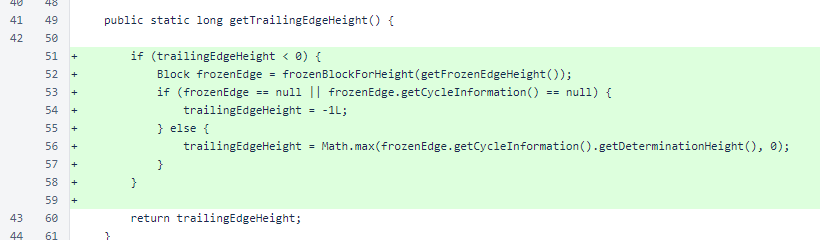In the getRetentionEdgeHeight() accessor, a value of -1 is now returned when the trailing edge height is -1. This does not affect behavior, but it makes more sense than returning a value of -25 when the value cannot be calculated. Also, when the the trailing edge is close to 0, the retention edge is limited to no less than 0. This does not affect behavior, either, and is only to improve display.
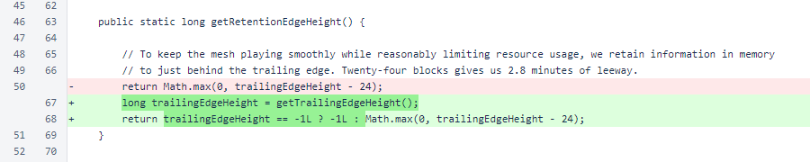In frozenBlockForHeight(), the HistoricalBlockManagerMap fallback was eliminated. Delivering blocks behind the retention edge was an unnecessary burden on verifiers.
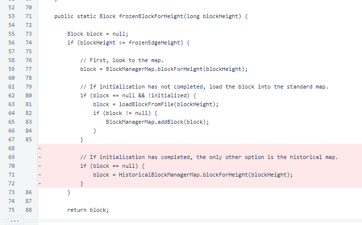Two TODO comments were removed after testing. Until commit a24f170884c05679e4634d7cc7bbb7e760273f65, the Nyzo verifier did not have a BalanceListManager, instead storing balance lists as properties on blocks. Introduction of the BalanceListManager was necessary to control memory usage, but it required extensive testing to ensure that balance lists were available when they were needed for processing.
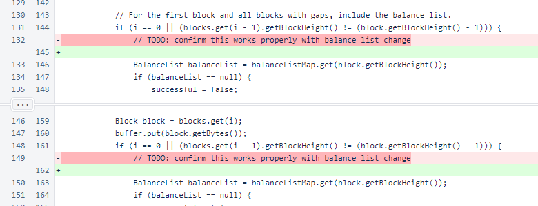The one-argument overload of BlockManager.freezeBlock() retrieves the previous block and passes information about it to the other overload of the method. This other overload now accepts another argument, the list of cycle verifiers, and the one-argument method provides a null value for this.
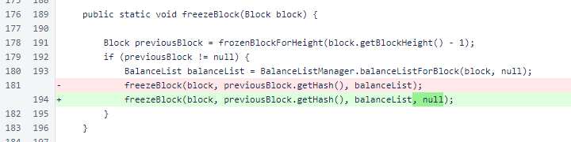The three-argument overload of BlockManager.freezeBlock() was modified to accept four arguments. The new argument, cycleVerifiers, is used in some cases as a lightweight alternative to allow the verifier to know the membership the current cycle when it would otherwise be unable due to a short time tracking the blockchain.
Two notifications were removed from this method, also.
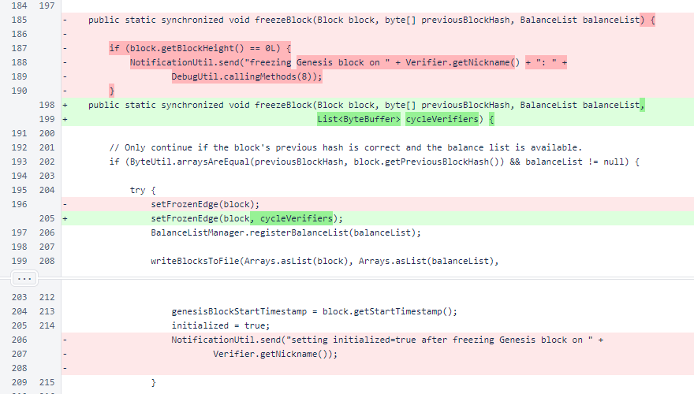In BlockManager.loadBlockFromFile(), blocks are no longer loaded from consolidated files. Loading blocks from individual files is much more efficient than loading blocks from consolidated files. When a single block from a file is needed, many more from the same file are typically needed. So, when a single block is needed from a consolidated file, the entire file is extracted, and the block is loaded from the individual file.
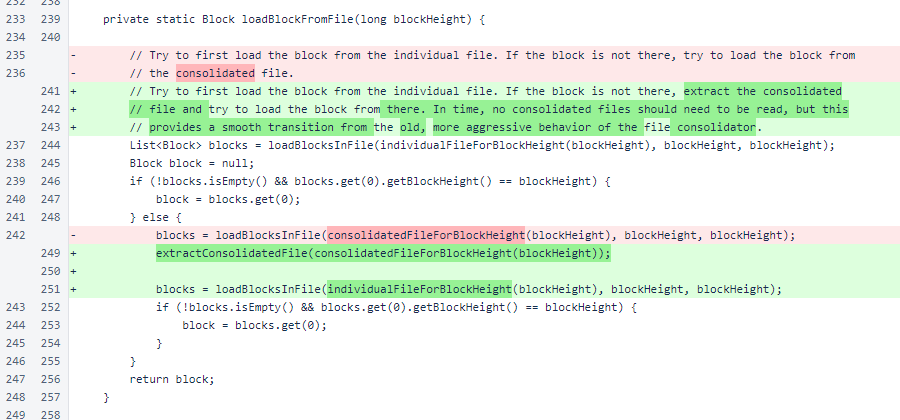In BlockManager.initialize(), a check was added to prevent entry into the initialization code if initialization has already completed. This causes the diff to show substantial changes due to indentation differences.
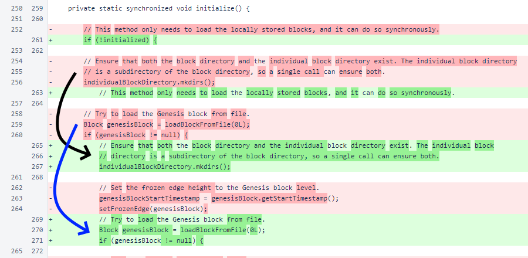Further into the method, there are more indentation changes, and loading of blocks from consolidated files has been eliminated.
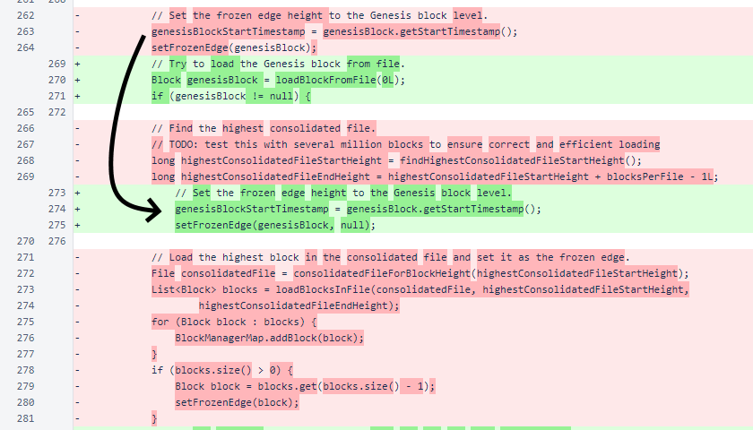Blocks are loaded from individual files as before. To attempt to have cycle information available as often as possible, blocks are loaded behind the frozen edge until the cycle information for the frozen edge can be calculated or until a missing block is encountered.
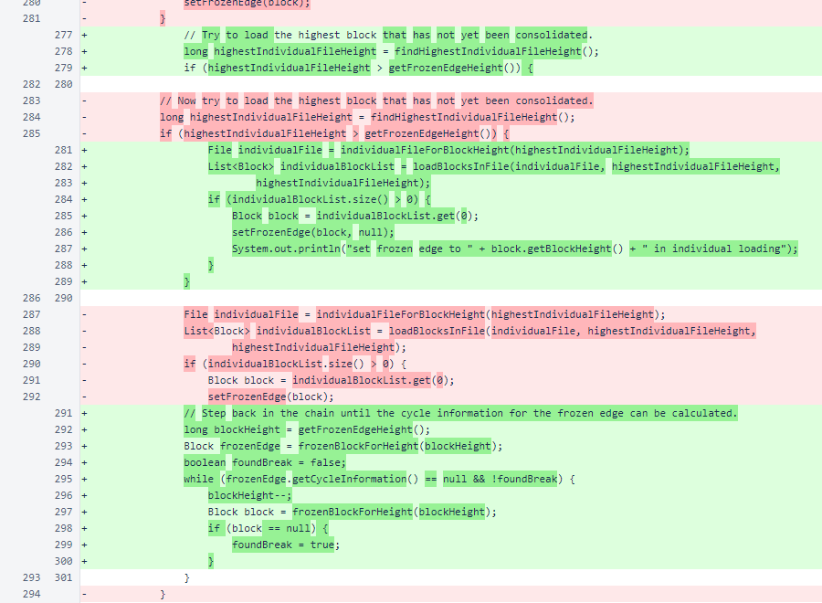Loading of blocks between the trailing edge and frozen edge has been eliminated, replaced with the loading of blocks starting at the frozen edge and stepping backward, described above. The remaining changes in the method are indentation differences due to the !initialized condition now wrapping the entire method.
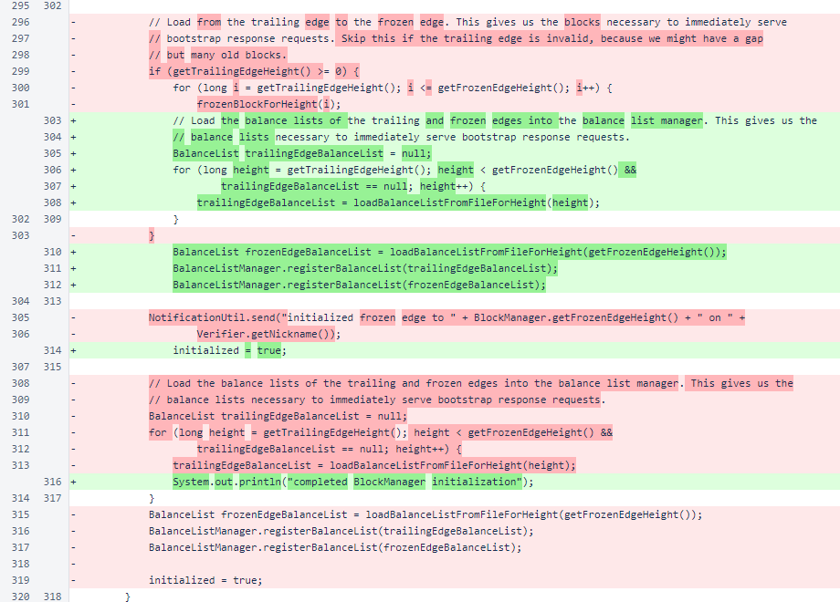The BlockManager.loadBalanceListFromFileForHeight() method now extracts consolidated files if their contents are needed. The updated consolidation logic should prevent blocks from ever needing to be used after consolidation, but this extraction pattern for blocks and balance lists assures elimination of performance issues due to loading data from consolidated files.
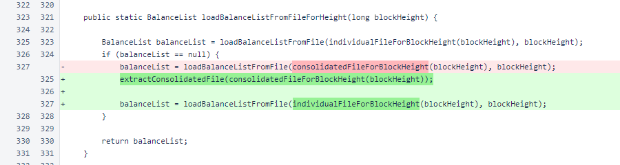The BlockManager.extractConsolidatedFile() method produces individual block files from consolidated block files. This is roughly the inverse of the function of the BlockFileConsolidator.
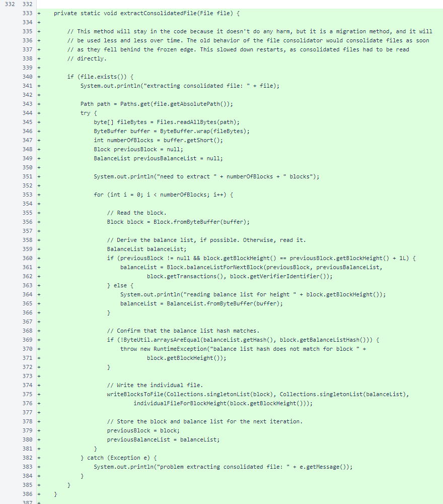As blocks are no longer read directly from consolidated files, the BlockManager.findHighestConsolidatedFileStartHeight() method is no longer needed.
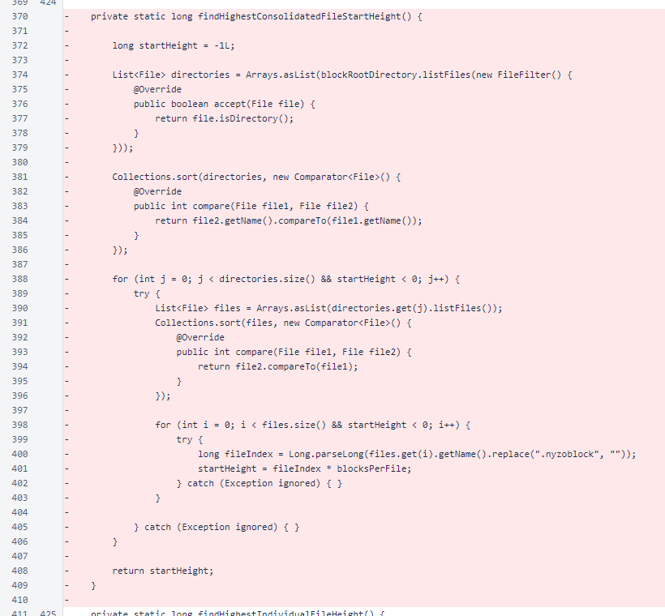BlockManager.setFrozenEdge() now accepts a list of cycle verifiers as its second argument. This is a backup for situations when the list of verifiers cannot be calculated from available blocks. The list is passed to the updateVerifiersInCurrentCycle() method for the calculation.
Also, the trailingEdgeHeight is now set to -1L whenever the frozen edge's cycle information is not available.
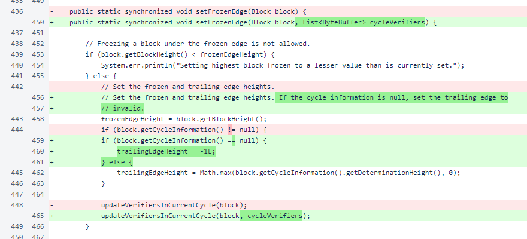The currentCycleList replaces the currentCycleLength field as the source of the value for the currentCycleLength() method.
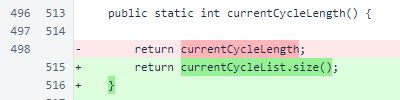The BlockManager.verifiersInCurrentCycleList() method provides the identifiers of the verifiers in the current cycle in an ordered list. The BlockManager.verifiersInCurrentCycleSet() method, a renaming of BlockManager.verifiersInCurrentCycle(), returns the same information as an unordered set.
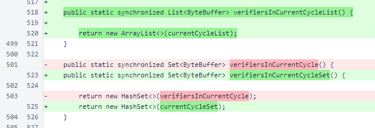The BlockManager.verifierInCurrentCycle() method uses the set that was renamed from verifiersInCurrentCycle to currentCycleSet.
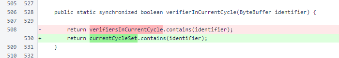The BlockManager.updateVerifiersInCurrentCycle() method now accepts the supplemental bootstrapCycleVerifiers argument. This list of cycle verifiers, provided by BootstrapResponseV2, can be used by a verifier in the absence of sufficient block history to know what verifiers are in the current cycle.
The first part of this method attempts to determine the verifiers in the current cycle through examination of blocks.
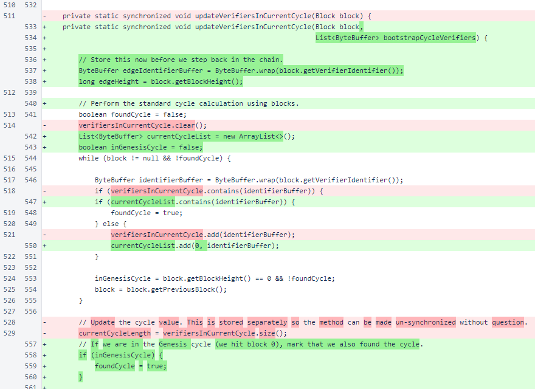If the standard (block-based) calculation of cycle verifiers was unsuccessful, an alternate calculation using either the BlockManager.currentCycleList or bootstrapCycleVerifiers is performed instead.
If either of the calculations succeeds, the values are stored in the class fields.
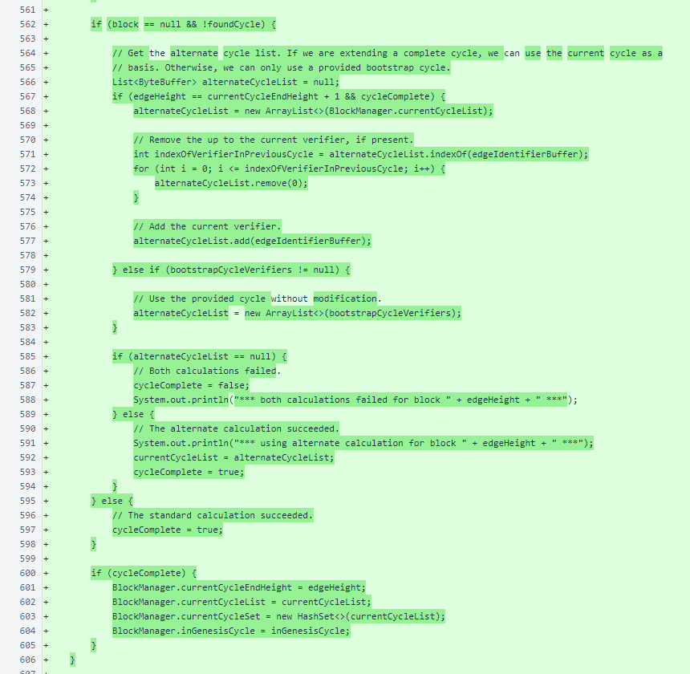In BlockVoteManager, a minimumVoteInterval was added to limit the rate at which votes are flipped. A receipt timestamp is stored on votes to ensure that enforcement is based on local timestamps, not on timestamps set by the sender. If the interval between receipt timestamps of votes is less than the specified minimum, the vote is discarded.

When retrieving the verifiersInCurrentCycle from BlockManager, the updated method name is used.
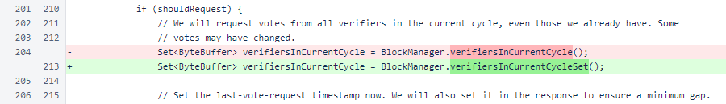The ChainInitializationManager no longer uses the BootstrapVoteTally class, so it was deleted.
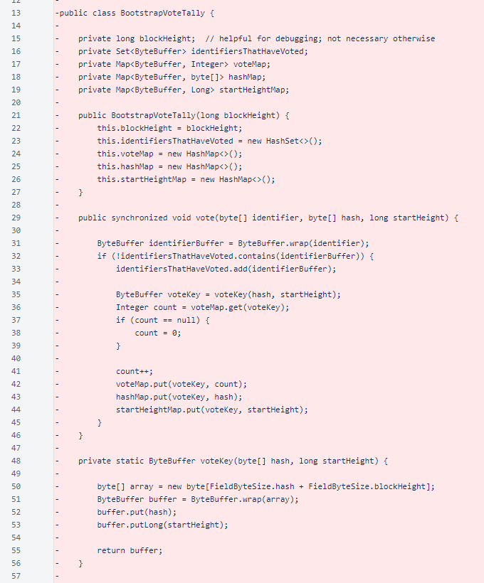In ChainInitializationManager, the hashVotes map, which stored BootstrapVoteTally objects keyed on height, has been replaced with the bootstrapResponses map, which stores BootstrapResponseV2 objects keyed on verifier identifier.
The ChainInitializationManager.processBootstrapResponseMessage() method previously retrieved and modified BootstrapVoteTally objects based on the bootstrap response. Now, it stores the BootstrapResponseV2 in a map, using the verifier's identifier as the key.
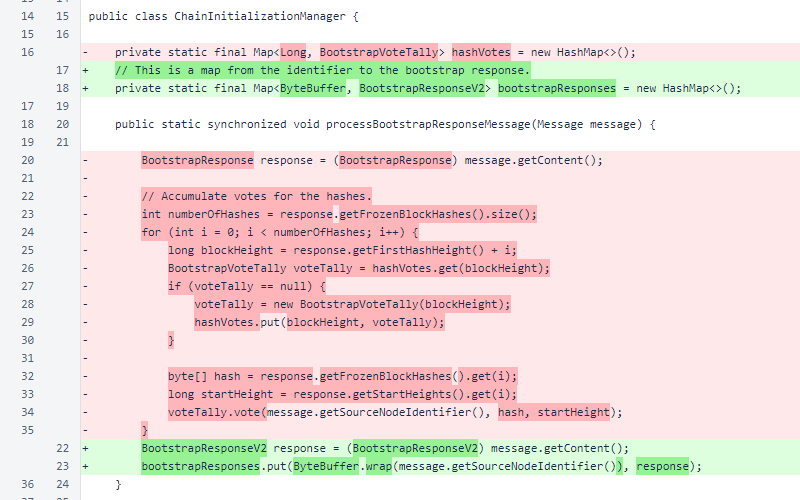The ChainInitializationManager.frozenEdgeHeight() method was replaced with ChainInitializationManager.winningResponse(). The old method provided a hash and height derived from the BootstrapVoteTally objects in the hashVotes map. The new method performs a count of BootstrapResponseV2 objects in the bootstrapResponses map. The BootstrapResponseV2 object contains both the hash and height of the frozen edge, like the previous result. It also provides the list of cycle verifiers used by the BlockManager in the alternate cycle calculation.
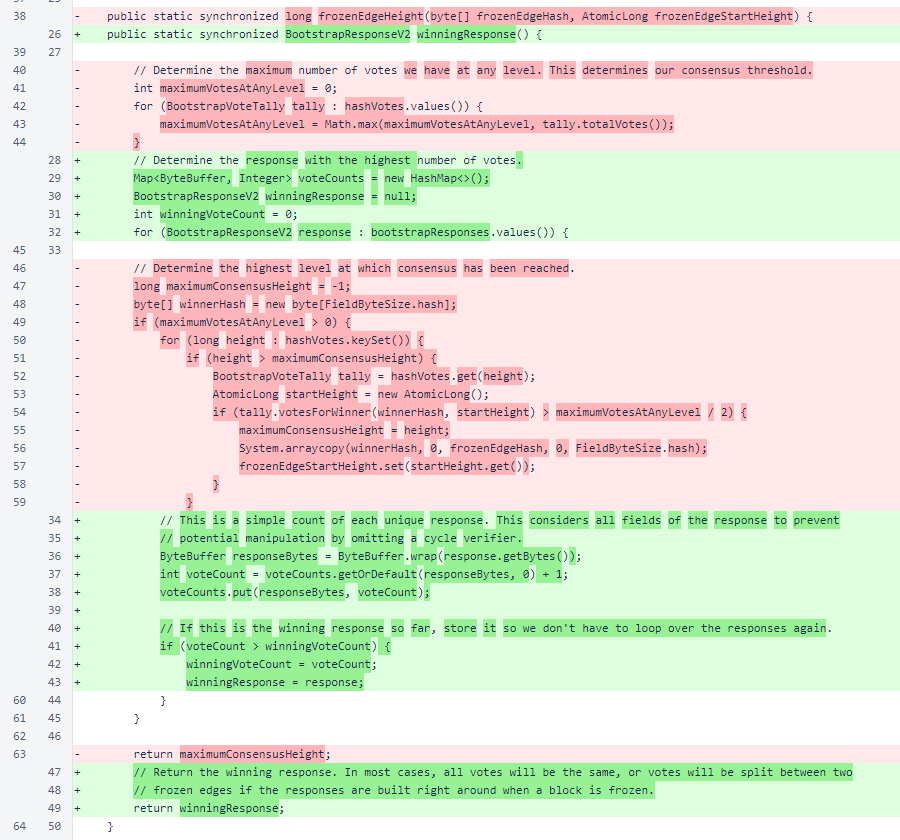The ChainInitializationManager.fetchChainSection() method was replaced with ChainInitializationManager.fetchBlock(). The new method only needs to fetch a single block and balance list. This, combined with the list of cycle verifiers from the BootstrapResponseV2, allows a verifier to start tracking the blockchain. The request is performed in a loop that continues until a valid block and balance list are available.
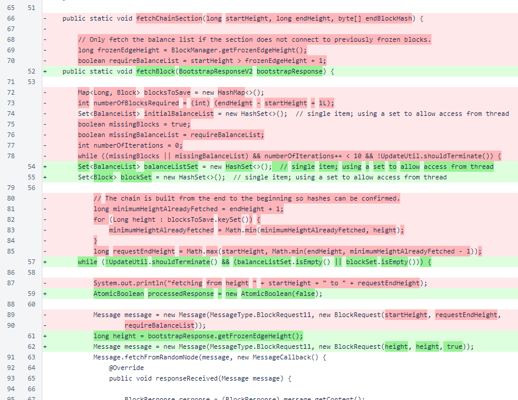When the BlockResponse is received in the fetchBlock() method, its block is checked against the winning bootstrap response to ensure the correct block was sent.
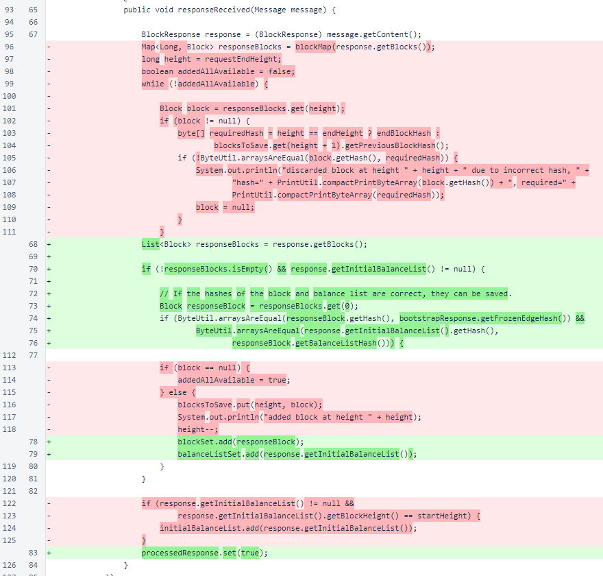The method waits up to 5 seconds for the response to the block request.
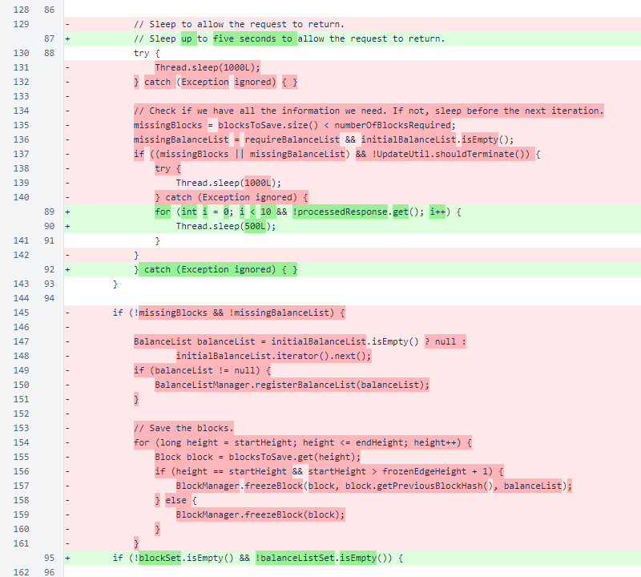If a good response was received, the block is frozen. The list of cycle verifiers from the bootstrap response is also provided to the freezeBlock() method.
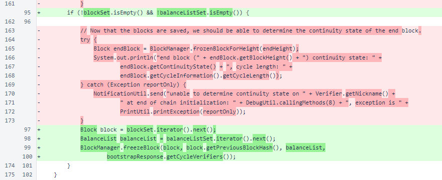In MeshListener.start(), an error is now printed and UpdateUtil.terminate() is called if an exception is thrown.
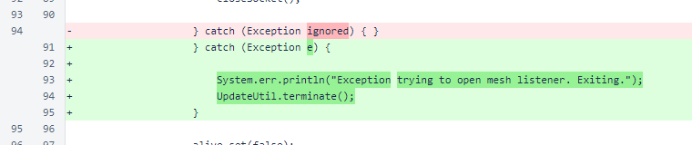In MeshListener.response(), the response to the BootstrapRequest1 message was removed. Responding to this message was a considerable burden and a large part of why temporary closure of the mesh was necessary.
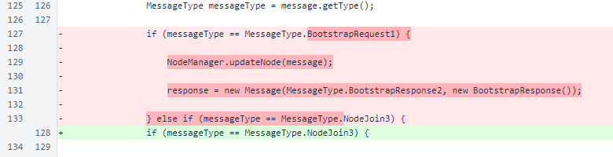Later in MeshListener.response(), the call to NodeManager.updateNode() was removed from the process of responding to MessageType.NewBlock9 messages. This call was initially added to help keep information about the cycle current. It is being removed to prepare for introduction of the sentinel.
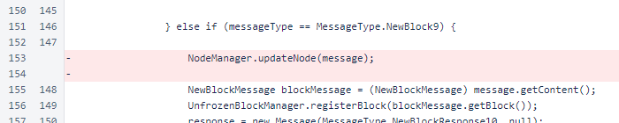A response to BootstrapRequestV2_35 was added to replace BootstrapRequest1.

A response to the private NewVerifierTallyStatusRequest414 message was added. The response provides the verifier's tally of votes from the NewVerifierVoteManager.
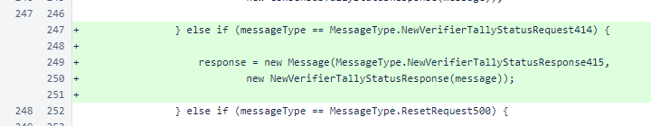The Message.broadcast() method previously sent messages to all nodes. This design allowed out-of-cycle nodes to follow the consensus process and track the blockchain just as in-cycle nodes could. However, this was too much of a burden on in-cycle nodes as the list of out-of-cycle nodes grew. While the cycle grows at a strictly controlled rate, out-of-cycle nodes can be added as quickly as operators choose to start them.
The broadcast() method was modified to only send messages to in-cycle nodes and a small number of out-of-cycle verifiers at the top of the voting list.
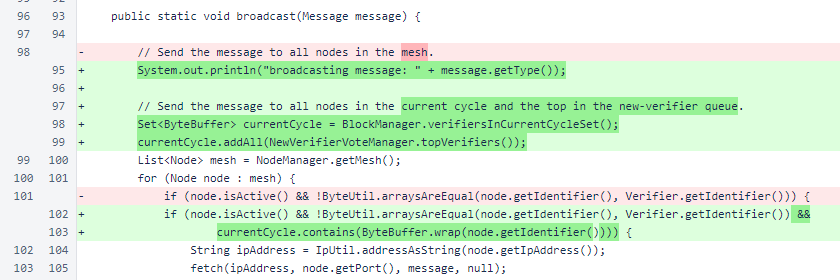To further reduce the burden on in-cycle verifiers, if a BlockVote19 message is received from an out-of-cycle verifier, a response is no longer provided.

In Message.processContent(), conditions for BootstrapRequest1 and BootstrapResponse2 were removed. Conditions for BootstrapRequestV2_35, BootstrapResponseV2_36, and NewVerifierTallyStatusResponse415 were added.
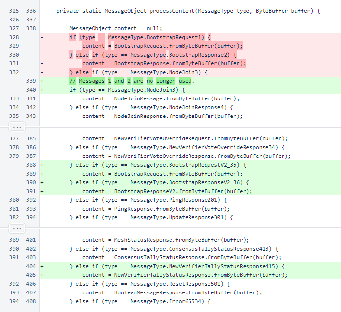In MessageQueue, three static fields were added. The shouldPrintZeroOnRemoval field is used to avoid showing that the message queue emptied unless its size was significantly large. The inBadState field marks when the MessageQueue is suspected to be stalled. The lastMessageStatus field is used in conjunction with inBadState to try to help diagnose problems with the queue.
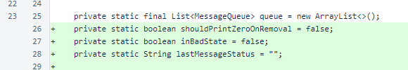The MessageQueue.blockThisThreadUntilClear() method sleeps on the calling thread until the queue has cleared. If the MessageQueue is filled with messages faster than those messages can be removed, message-processing time increases and the system stops functioning properly. This method is called before sending new messages to avoid clogging the queue.
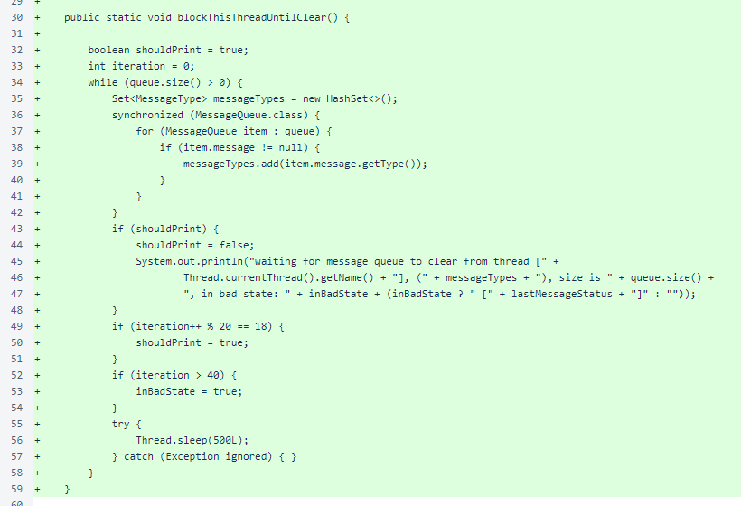In MessageQueue.add(), print statements were added to periodically show as the queue grows in size. If the queue passes a certain size, the shouldPrintZeroOnRemoval field is set to true so another message will be shown when the queue empties.
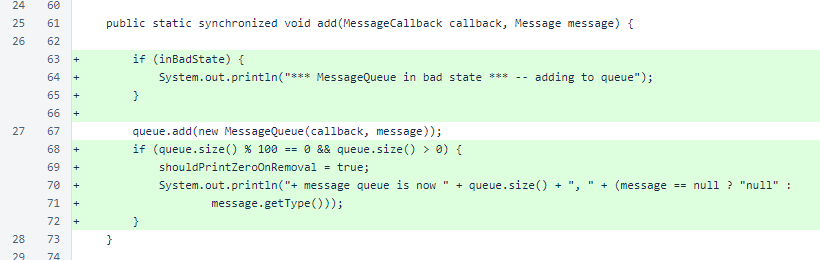In MessageQueue.next(), print statements were added to show status as the queue shrinks in size.
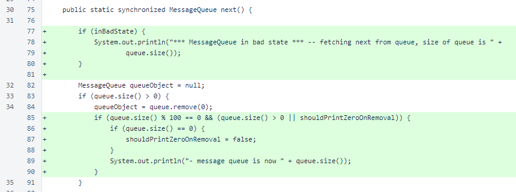In MessageQueue.start(), statements were added to provide insight into queue stalls. The lastMessageStatus field is set in this method to indicate the last processing state the queue tried to perform.
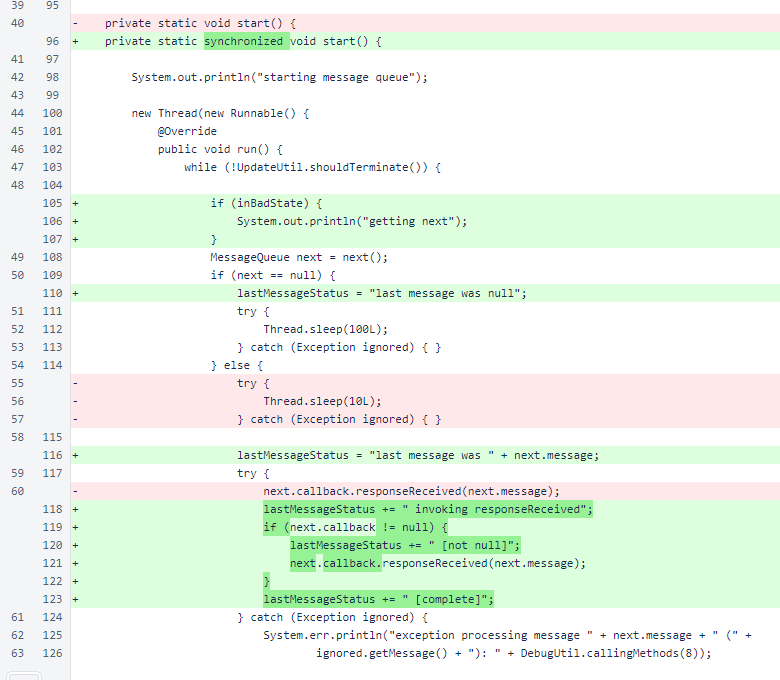In the MessageType enumeration, values were added for the bootstrap version 2 and new-verifier tally messages. The values for the version-1 bootstrap messages were removed.
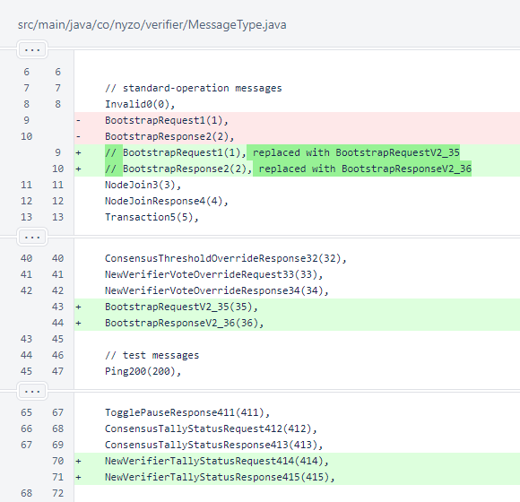In NewVerifierQueueManager.updateVote(), a condition was added to only update the vote if this verifier is in cycle.
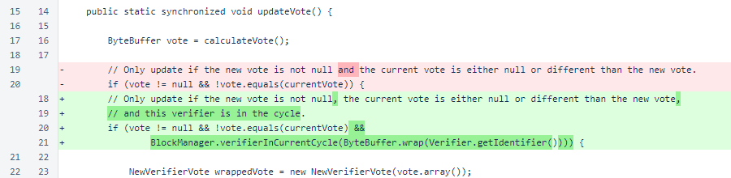A method call in NewVerifierQueueManager.calculateVote() was updated for the renamed BlockManager.verifiersInCurrentCycleSet() method.
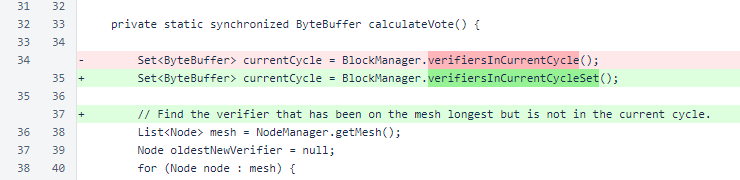A method call in NewVerifierVoteManager.removeOldVotes() was also updated for the renamed BlockManager.verifiersInCurrentCycleSet() method.
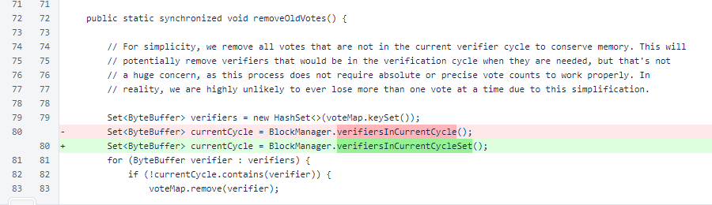Creation of the vote-count map was encapsulated in the NewVerifierVoteManager.voteTotals() method. This allows the logic, which was previously inline in the NewVerifierVoteManager.topVerifiers() method, to be reused by the NewVerifierTallyStatusResponse.
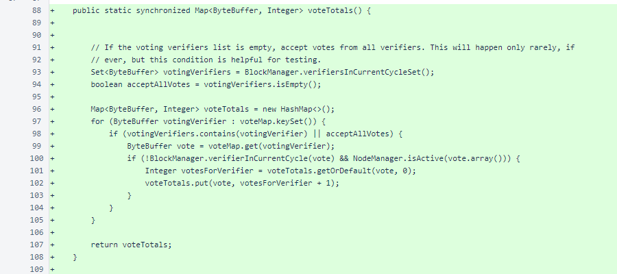The NewVerifierVoteManager.topVerifiers() method has been modified to use the NewVerifierVoteManager.voteTotals() method and the renamed BlockManager.verifiersInCurrentCycleSet() method.
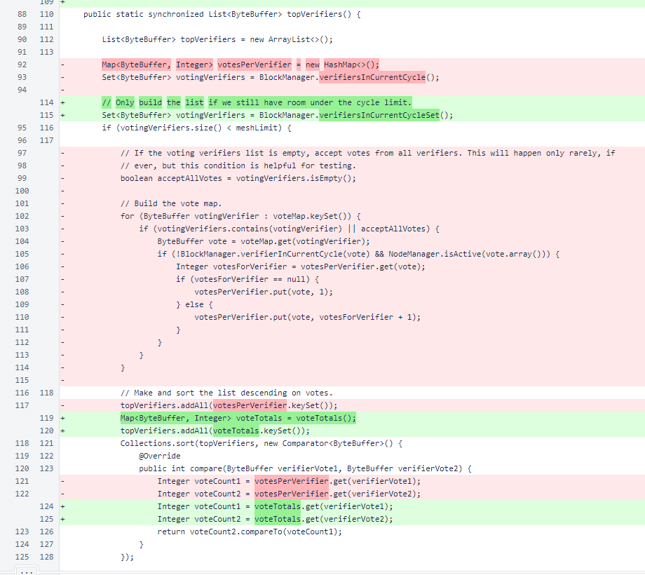At the end of NewVerifierVoteManager.topVerifiers(), setting of the top new field on the status response was eliminated. The NewVerifierTallyStatusResponse provides a detailed look into the vote tally, so this field is no longer needed.
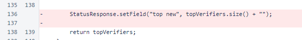In NodeManager, the nodeJoinRequestTimestamps map was added to limit the frequency at which node-join messages are sent to other nodes.
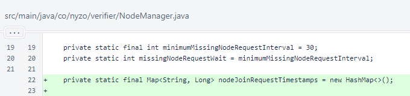In NodeManager.updateNode(), the types of messages registered were reduced in preparation for the sentinel.
Using the nodeJoinRequestTimestamps map, a minimum interval of 60 seconds between messages to each node is now imposed in NodeManager.sendNodeJoinMessage(). Most of the differences in this method are due to indentation changes.
In UnfrozenBlockManager, the disconnectedBlocks map was added to allow a verifier to store blocks past the frozen edge when they cannot yet be registered normally. The lastBlockVoteTimestamp is used to ensure that this verifier does not change its vote more frequently than is allowed by the minimum vote interval. The attemptToRegisterDisconnectedBlocks() method tries to register blocks from the disconnectedBlocks map into the primary map.
In UnfrozenBlockManager.registerBlock(), blocks more than one past the frozen edge for which a balance list cannot be derived are added to the disconnectedBlocks map.
The BlockVoteManager.minimumVoteInterval is enforced in UnfrozenBlockManager.updateVote().
In UnfrozenBlockManager.castVote(), the lastBlockVoteTimestamp is set to help enforce the minimum vote interval. Votes are now only broadcast from in-cycle verifiers and during the Genesis cycle, when all verifiers are considered in-cycle.
In UnfrozenBlockManager.attemptToFreezeBlock(), the lastBlockVoteTimestamp is reset to 0 when a block is frozen.
In UnfrozenBlockManager.fetchMissingBlock(), a message was added to indicate receipt of a block response.
To reduce network traffic, in UnfrozenBlockManager.requestMissingBlocks(), requests are now limited to only the height one past the local frozen edge.
In the static block of Verifier, printing of the verifier's identifier was added after loading of the private seed. This allows the operator to ensure that the seed was read properly.
To eliminate any possible concerns of odd behavior due to multiple concurrent accesses, the Verifier.loadPrivateSeed() method is now synchronized.
In Verifier.start(), starting of the MeshListener was moved earlier in the process to allow the verifier to start receiving messages sooner. Several print statements were added to allow an operator to observe initialization progress.
Later in the Verifier.start() method, sending of the old bootstrap messages was removed, and a condition was added to bypass the bootstrap process completely after restarts with obviously short downtime.
The new bootstrap process uses the new BootstrapRequestV2_35 message. It also uses the MessageQueue.blockThisThreadUntilClear() method to avoid backing up the queue, and the processBootstrapResponseMessage() method is now encapsulated in ChainInitializationManager.
The ChainInitializationManager.winningResponse() provides the consensus BootstrapResponseV2 object, which encapsulates the height, hash, and cycle list of the consensus frozen edge.
If a consensus bootstrap response is determined, the verifier considers its own current state and its distance from this consensus response to determine whether the frozen edge should be reinitialized or the local state should be kept.
Premature termination of the verifier was eliminated. The new bootstrap process will not reach this point without satisfactory initialization. This code diff appears more substantial than it is due to indentation changes.
In Verifier.loadGenesisBlock(), a null argument was added to the BlockManager.freezeBlock() method call. This argument is for the new list of cycle verifiers provided by the bootstrap response, and it is irrelevant for the Genesis block.
The Verifier.processBootstrapResponseMessage() method, which processed the original bootstrap responses, was removed. An equivalent method was added to ChainInitializationManager.
In Verifier.verifierMain(), a call to MessageQueue.blockThisThreadUntilClear() was added at the beginning of the loop to avoid backing up the MessageQueue. A dead block of code related to reinitialization after an IP address change was removed. Before attempting to freeze a block, an attempt is now made to register disconnected blocks.
In the BlockResponse constructor, responses are now limited to 10 blocks or fewer, but the maximum size of the response was raised from 50,000 bytes to 1,000,000 bytes.
In BlockVote, the receiptTimestamp field was added to ensure a minimum time interval between block votes from a verifier.
The entire BootstrapResponse class was deleted. The image below only shows the beginning of the class, but the entire class was removed.
The BootstrapResponseV2 class replaces the BootstrapResponse class. It encapsulates a height for the frozen edge, a hash for the frozen edge, and a list of identifiers of verifiers in the current cycle.
The no-argument constructor populates the object with values representing the current state of the verifier. It is used for responding to requests. The three-argument constructor populates the object with the argument values. It is used for reconstructing responses from other verifiers.
Accessors are provided for all fields of BootstrapResponseV2.
The BootstrapResponseV2.getByteSize() and BootstrapResponseV2.getBytes() methods are implemented as would be expected for this class. All fields are serialized.
The BootstrapResponseV2.fromByteBuffer() method is similarly predictable. It reads all the fields from a ByteBuffer and returns a BootstrapResponseV2 object containing the values.
These release notes are incomplete.